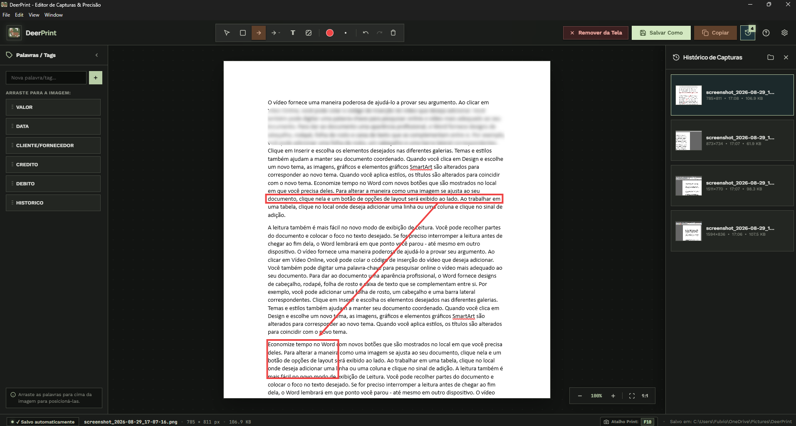
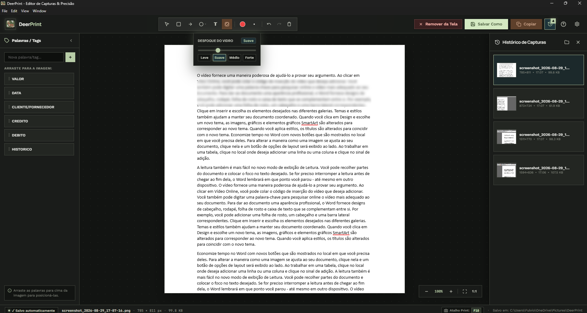
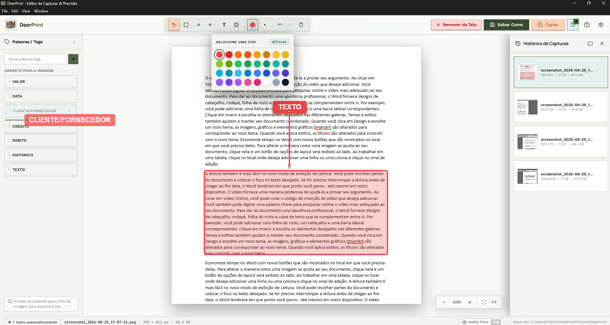
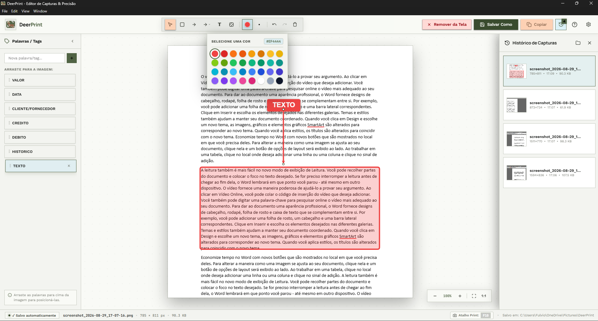
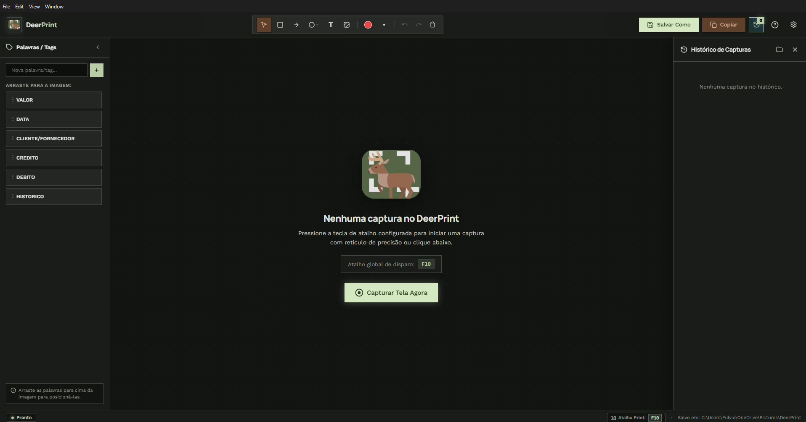

O DeerPrint é um editor de print focado em produtividade 100% gratuito, tire print e edite com as principais ferramentas em um piscar de olhos.

Cada detalhe do DeerPrint foi planejado para eliminar atritos, garantindo velocidade máxima e total fidelidade visual.
Puxe setas, faça marcações, destaques e escreva textos diretamente no print.
Edição intuitivaCom a ferramenta Vidro você pode desfocar e ocultar dados sensíveis, textos, senhas, endereços, etc.
Privacidade instantâneaAdicione qualquer palavra, frase ou termo muito usado e arraste diretamente para a imagem como badges coloridos e editáveis.
Tags PersonalizáveisAltere facilmente a cor de textos e de todos os elementos e objetos inseridos no print — como retângulos preenchidos, setas e palavras/tags arrastáveis.
Cores para todos os objetosAcesse suas capturas recentes direto no painel lateral direito, com resolução em pixels, data/hora e tamanho em KB.
Sidebar de CapturasAo tirar um print ele já estará na sua área de transferência. Você já pode colar diretamente em um programa ou editar antes, e salvar o print com nome personalizado.
Área de transferênciaNenhuma imagem sai do seu computador. Zero envio para nuvens terceiras, sem telemetria e sem necessidade de login.
Zero TelemetriaVeja como cada recurso funciona dentro da interface real do DeerPrint.
Conecte pontos de interesse com setas precisas e enquadre textos ou botões com retângulos de borda calibrada. O desenho não interfere nos elementos existentes na tela.
Oculte parágrafos inteiros, senhas ou dados confidenciais com desfoque gaussiano de vidro fosco. Escolha entre os níveis Leve, Suave, Médio ou Forte.

Ganhe tempo adicionando qualquer palavra ou termo frequentemente utilizado na sua rotina e arraste diretamente para a imagem como tags visuais destacadas.

Use a paleta de cores para mudar a tonalidade de textos e de todos os objetos adicionados na imagem — como retângulos preenchidos, setas de precisão e palavras/tags arrastáveis.

Interface moderna e minimalista com indicação do atalho global F10, botão de disparo imediato e painel lateral com histórico completo de capturas e miniaturas.

Aprenda o fluxo de trabalho ideal do DeerPrint em poucos minutos.
Pressione a tecla de atalho configurada (F10) em qualquer lugar do Windows.
Arraste o cursor sobre a área desejada. O print será aberto no DeerPrint e copiado imediatamente para a área de transferência (Ctrl + V).
Arraste palavras da barra lateral esquerda diretamente para a imagem, ou use a ferramenta Texto (T) clicando exatamente onde deseja escrever.
Dê dois cliques em qualquer texto para editar, ou clique e arraste para movê-lo. Ao clicar fora, o texto é salvo automaticamente.
Selecione Retângulo (R), Arredondado (U), Círculo (C), Seta (A), Seta Dupla (D) ou Passos Numerados (N).
Você pode personalizar a cor na paleta de 32 cores e a espessura do traço de 1 a 16px.
Use a ferramenta Vidro (G) para ocultar informações confidenciais (senhas, CPF, nomes e valores sensíveis).
Escolha entre os níveis Leve, Suave (efeito de vidro translúcido com borda suave e sombra 3D), Médio ou Forte.
Segure a tecla Espaço ou pressione o Botão Direito do Mouse para arrastar a tela livremente (Pan).
Use os controles no canto inferior direito para aplicar zoom de até 800% ou ajustar à tela.
Pressione Ctrl + C para copiar a imagem final com todas as anotações em alta resolução.
Use Ctrl + S para salvar o arquivo na pasta de sua preferência.
Domine todas as ferramentas com uma tecla de distância.
Disparo global configurável
Mova e reposicione objetos
Enquadre áreas retangulares
Cantos suaves com raio ajustável
Destaque ícones ou botões
Apontamento preciso com ponta vetorial
Conecte dois pontos simultaneamente
Geração sequencial auto-incremental
Dois cliques para editar
Oculte dados sensíveis com vidro fosco
Navegue livremente pela captura
Aumente ou ajuste à tela
Copia direto para a área de transferência
Salva na pasta de sua preferência
Histórico completo de alterações
Restaura anotações desfeitas
Cancela a captura atual sem salvar
Obtenha a versão estável mais recente para Windows. O instalador configura automaticamente o início silencioso em segundo plano e registra o atalho global F10.
Tudo o que você precisa saber sobre o funcionamento e privacidade do DeerPrint.
Sua opinião é fundamental para evoluirmos o DeerPrint. Envie sua mensagem, relate um problema ou sugira novos recursos.